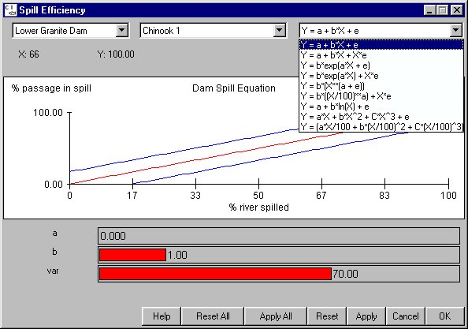

Spill Efficiency: Efficiency of Passing Fish with Spill
Selecting Dam Spill Efficiency opens a window for setting parameters that describe the efficiency of passing fish with spill water at dams. Spill efficiency is set for each dam on a species-specific basis. The spill efficiency equations are of the form, Y = f (X: a, b, c, e), where:
Spill Efficiency opens a window for setting parameters that describe the efficiency of passing fish with spill water at dams. Spill efficiency is set for each dam on a species-specific basis. The spill efficiency equations are of the form, Y = f (X: a, b, c, e), where:
- Y = Percent fish passed in spill.
- X = Percent of river spilled during the spill period.
- a, b, c = Depend on functional form selected.
- var = Equation variance parameter set by slider bar (e in equations).
The average efficiency is displayed by a red line in the equation window and the blue lines determine the bound for the variance as set by var. This is an Equation Input window.

Spill Efficiency equation window